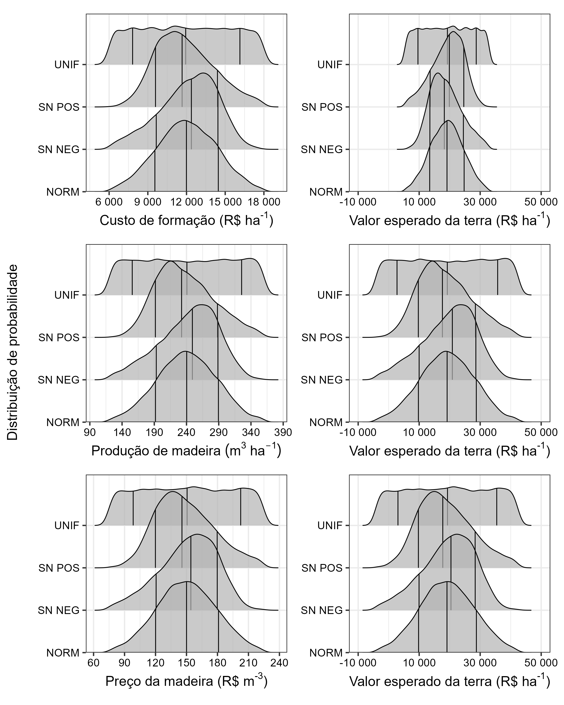

experimento-02_incerteza-uma-variavel.Rmd
library(vet)
library(dplyr)
#>
#> Attaching package: 'dplyr'
#> The following objects are masked from 'package:stats':
#>
#> filter, lag
#> The following objects are masked from 'package:base':
#>
#> intersect, setdiff, setequal, union
library(tidyr)
library(ggridges)
library(ggplot2)
library(patchwork)
library(gridExtra)
#>
#> Attaching package: 'gridExtra'
#> The following object is masked from 'package:dplyr':
#>
#> combine
library(scales)
library(grid)
TAXA = 0.10
ROTACAO = 6
CUSTO = 12000
lst_param_custo <- list(
min = CUSTO * 0.5,
max = CUSTO * 1.5,
mean = CUSTO,
sd = CUSTO * 0.2,
skew = 0.7
)
PRODUCAO = 240
lst_param_producao <- list(
min = PRODUCAO * 0.5,
max = PRODUCAO * 1.5,
mean = PRODUCAO,
sd = PRODUCAO * 0.2,
skew = 0.7
)
PRECO = 150
lst_param_preco <- list(
min = PRECO * 0.5,
max = PRECO * 1.5,
mean = PRECO,
sd = PRECO * 0.2,
skew = 0.7
)
vec_aux_limits <- c(-10000, 50000)
tab_vet_custo <- tab_amostra_independente |>
filter(cd_var == "custo") |>
select(cd_distribuicao, custo = vl_amostra) |>
mutate(
vet = vet(
preco_madeira = lst_param_preco$mean,
taxa = TAXA, rotacao = ROTACAO,
vp_custo = custo,
producao = lst_param_producao$mean
)
)
plt_ridge_custo_dist <- tab_vet_custo |>
ggplot(aes(custo, cd_distribuicao)) +
stat_density_ridges(quantile_lines = TRUE, quantiles = c(0.15, 0.5, 0.85), alpha = 0.7, size = 0.2) +
labs(
x = expression(paste("Custo de formação ", "(R$ ", "ha"^"-1", ")")),
y = NULL
) +
scale_x_continuous(breaks = seq(0, 30000, 3000), labels = label_number_auto())
plt_ridge_custo_vet_dist <- tab_vet_custo |>
ggplot(aes(vet, cd_distribuicao)) +
stat_density_ridges(quantile_lines = TRUE, quantiles = c(0.15, 0.5, 0.85), alpha = 0.7, size = 0.2) +
labs(
x = expression(paste("Valor esperado da terra ", "(R$ ", "ha"^"-1", ")")),
y = NULL
) +
scale_x_continuous(breaks = seq(-10000, 100000, 20000), limits = vec_aux_limits, labels = label_number_auto())
tab_vet_producao <- tab_amostra_independente |>
filter(cd_var == "producao") |>
select(cd_distribuicao, producao = vl_amostra) |>
mutate(
vet = vet(
preco_madeira = lst_param_preco$mean,
taxa = TAXA, rotacao = ROTACAO,
vp_custo = lst_param_custo$mean,
producao = producao
)
)
plt_ridge_producao_dist <- tab_vet_producao |>
ggplot(aes(producao, cd_distribuicao)) +
stat_density_ridges(quantile_lines = TRUE, quantiles = c(0.15, 0.5, 0.85), alpha = 0.7, size = 0.2) +
labs(
x = expression(Produção~de~madeira~(m^3~ha^-1)),
y = NULL
) +
scale_x_continuous(breaks = seq(40, 500, 50))
plt_ridge_producao_vet_dist <- tab_vet_producao |>
ggplot(aes(vet, cd_distribuicao)) +
stat_density_ridges(quantile_lines = TRUE, quantiles = c(0.15, 0.5, 0.85), alpha = 0.7, size = 0.2) +
labs(
x = expression(paste("Valor esperado da terra ", "(R$ ", "ha"^"-1", ")")),
y = NULL
) +
scale_x_continuous(breaks = seq(-10000, 100000, 20000), limits = vec_aux_limits, labels = label_number_auto())
tab_vet_preco <- tab_amostra_independente |>
filter(cd_var == "preco") |>
select(cd_distribuicao, preco = vl_amostra) |>
mutate(
vet = vet(
taxa = TAXA, rotacao = ROTACAO,
vp_custo = lst_param_custo$mean,
producao = lst_param_producao$mean,
preco_madeira = preco
)
)
plt_ridge_preco_dist <- tab_vet_preco |>
ggplot(aes(preco, cd_distribuicao)) +
stat_density_ridges(quantile_lines = TRUE, quantiles = c(0.15, 0.5, 0.85), alpha = 0.7, size = 0.2) +
labs(
x = expression(paste("Preço da madeira ", "(R$ ", "m"^"-3", ")")),
y = NULL
) +
scale_x_continuous(breaks = seq(0, 500, 30))
plt_ridge_preco_vet_dist <- tab_vet_preco |>
ggplot(aes(vet, cd_distribuicao)) +
stat_density_ridges(quantile_lines = TRUE, quantiles = c(0.15, 0.5, 0.85), alpha = 0.7, size = 0.2) +
labs(
x = expression(paste("Valor esperado da terra ", "(R$ ", "ha"^"-1", ")")),
y = NULL
) +
scale_x_continuous(breaks = seq(-10000, 100000, 20000), limits = vec_aux_limits, labels = label_number_auto())
{((plt_ridge_custo_dist + plt_ridge_custo_vet_dist) /
(plt_ridge_producao_dist + plt_ridge_producao_vet_dist) /
(plt_ridge_preco_dist + plt_ridge_preco_vet_dist)) &
scale_y_discrete(
labels = c("unif" = "UNIF", "sn_pos" = "SN POS", "sn_neg" = "SN NEG", "norm" = "NORM"),
expand = expansion(mult = c(0, .4))
) &
theme_bw(7) &
theme(
text = element_text(color = "black"),
axis.text = element_text(color = "black")
)
} |>
patchworkGrob() |>
grid.arrange(left = textGrob("Distribuição de probabilidade", rot = 90, gp = gpar(fontsize = 7)))
#> Picking joint bandwidth of 365
#> Warning: Using the `size` aesthetic with geom_segment was deprecated in ggplot2 3.4.0.
#> ℹ Please use the `linewidth` aesthetic instead.
#> This warning is displayed once every 8 hours.
#> Call `lifecycle::last_lifecycle_warnings()` to see where this warning was
#> generated.
#> Picking joint bandwidth of 839
#> Picking joint bandwidth of 7.33
#> Picking joint bandwidth of 1420
#> Picking joint bandwidth of 4.55
#> Picking joint bandwidth of 1410
vec_vet_norm_1 = vet(
taxa = TAXA,
rotacao = ROTACAO,
vp_custo = tab_amostra_independente |> filter(cd_var == "custo", cd_distribuicao == "norm") |> pull(vl_amostra),
producao = PRODUCAO,
preco_madeira = PRECO
)
vec_vet_norm_2 = vet(
taxa = TAXA,
rotacao = ROTACAO,
vp_custo = tab_amostra_independente |> filter(cd_var == "custo", cd_distribuicao == "norm") |> pull(vl_amostra),
producao = tab_amostra_independente |> filter(cd_var == "producao", cd_distribuicao == "norm") |> pull(vl_amostra),
preco_madeira = PRECO
)
vec_vet_norm_3 = vet(
taxa = TAXA,
rotacao = ROTACAO,
vp_custo = tab_amostra_independente |> filter(cd_var == "custo", cd_distribuicao == "norm") |> pull(vl_amostra),
producao = tab_amostra_independente |> filter(cd_var == "producao", cd_distribuicao == "norm") |> pull(vl_amostra),
preco_madeira = tab_amostra_independente |> filter(cd_var == "preco", cd_distribuicao == "norm") |> pull(vl_amostra)
)
vec_vet_unif_1 = vet(
taxa = TAXA,
rotacao = ROTACAO,
vp_custo = tab_amostra_independente |> filter(cd_var == "custo", cd_distribuicao == "unif") |> pull(vl_amostra),
producao = PRODUCAO,
preco_madeira = PRECO
)
vec_vet_unif_2 = vet(
taxa = TAXA,
rotacao = ROTACAO,
vp_custo = tab_amostra_independente |> filter(cd_var == "custo", cd_distribuicao == "unif") |> pull(vl_amostra),
producao = tab_amostra_independente |> filter(cd_var == "producao", cd_distribuicao == "unif") |> pull(vl_amostra),
preco_madeira = PRECO
)
vec_vet_unif_3 = vet(
taxa = TAXA,
rotacao = ROTACAO,
vp_custo = tab_amostra_independente |> filter(cd_var == "custo", cd_distribuicao == "unif") |> pull(vl_amostra),
producao = tab_amostra_independente |> filter(cd_var == "producao", cd_distribuicao == "unif") |> pull(vl_amostra),
preco_madeira = tab_amostra_independente |> filter(cd_var == "preco", cd_distribuicao == "unif") |> pull(vl_amostra)
)
tab_vet_resumo <- tribble(
~custo, ~producao, ~preco, ~vl_amostra,
"norm", "fixo", "fixo", vec_vet_norm_1,
"norm", "norm", "fixo", vec_vet_norm_2,
"norm", "norm", "norm", vec_vet_norm_3,
"unif", "fixo", "fixo", vec_vet_unif_1,
"unif", "unif", "fixo", vec_vet_unif_2,
"unif", "unif", "unif", vec_vet_unif_3
) |>
unnest(vl_amostra) |>
group_by(custo, producao, preco) |>
summarise(
media = mean(vl_amostra),
mediana = median(vl_amostra),
sd = sd(vl_amostra),
p00 = min(vl_amostra),
p15 = quantile(vl_amostra, 0.15),
p25 = quantile(vl_amostra, 0.25),
p75 = quantile(vl_amostra, 0.75),
p85 = quantile(vl_amostra, 0.85),
p100 = max(vl_amostra)
) |>
ungroup() |>
mutate_if(is.numeric, round)
#> `summarise()` has grouped output by 'custo', 'producao'. You can override using
#> the `.groups` argument.
tab_vet_resumo
#> # A tibble: 6 × 12
#> custo producao preco media mediana sd p00 p15 p25 p75 p85 p100
#> <chr> <chr> <chr> <dbl> <dbl> <dbl> <dbl> <dbl> <dbl> <dbl> <dbl> <dbl>
#> 1 norm fixo fixo 19076 19122 5300 5332 13448 15287 22728 24737 32868
#> 2 norm norm fixo 19147 19243 10330 -16763 8281 12046 26252 29972 52065
#> 3 norm norm norm 19201 18552 13755 -25258 4976 9523 28110 33498 74572
#> 4 unif fixo fixo 19173 19255 7899 5331 9599 12400 25914 28704 32880
#> 5 unif unif fixo 19291 19398 15838 -17697 1301 7083 31245 37233 56079
#> 6 unif unif unif 19329 16838 21110 -27225 -2447 3427 33002 42821 87347